Colophon
IT IS NOT SET IN STONE
2019 Céline Hurka
Text, design and typefaces:
Céline Hurka
Thesis Supervision:
Füsun Türetken
Merel Boers
Matthias Kreutzer
Silvio Lorusso
Jan Robert Leegte
Proofreading:
Tânia Raposo
Jan Egbers
Typefaces:
Candide
Oxford No. 2
Archiva
Alfarn
Includes personal conversations with:
Ursula Beerhorst
Jens Baudisch
Françoise Berserik
Erik van Blokland
Just van Rossum
Mona Franz
Frank E. Blokland
Rickey Tax
Susana Carvalho
Kai Bernau
Ferdinand Ulrich
Royal Academy of Art, The Hague, January 2019
All rights reserved. no part of this publication
may be printed or used in any form or by any
means without Permission in writing by the Author.
I would like to thank Ursula Beerhorst and
Jens Baudisch for initially sparking my interest
in restoration many years ago and for all the
inspiring discussions ever since!
Erik van Blokland, Ferdinand Ulrich, Frank E. Blokland,
Françoise Berserik, Just van Rossum, Kai Bernau, Mona Franz,
Rickey Tax and Susana Carvalho for letting me use our conversations
and for your trust, support, questions and feedback.
Füsun Türetken, Merel Boers and Matthias Kreutzer
for guiding this thesis.
Daniël Siegersma for lending me your project title.
Tânia Raposo for reading and advising and for our weekly
visits to the book market.
Jan Egbers for supporting me in All possible ways: for reading,
discussing and listening.
And finally, my parents, thank you for your endless encouragement.
Bibliography
Conversations
Personal Conversation Frank E. Blokland
Personal Conversation Mona Franz
Personal Conversation Rickey Tax
Personal Conversation Erik van Blokland
Personal Conversation Ferdinand Ulrich
Personal Conversation Françoise Berserik
Personal Conversation Just van Rossum
Personal Conversation Susana Carvalho and Kai Bernau
Personal Conversation Ursula Beerhorst and Jens Baudisch
TEXTS
Allmen, Fred von. Buddhismus: Lehren — Praxis — Meditation. Theseus-Verlag, 2010.
Antonelli, Paola. “MoMA @ at MoMA.” Inside_out MoMA, 22 Mar. 2010,
www.moma.org/explore/inside_out/2010/03/22/at-moma/.
Benjamin, Walter. Das Kunstwerk im Zeitalter seiner technischen
Reproduzierbarkeit. Suhrkamp Verlag, 1966.
Benjamin, Walter. On the Concept of History. Frankfurt Am Main:
Suhrkamp Verlag, 1974.
Blade Runner 2049. Denis Villeneuve. 2017
Blokland, Frank Eduard. On the Origin of Patterning in Movable Latin
Type: Renaissance Standardisation, Systematisation, and Unitisation of
Textura and Roman Type. Self-published, 2016. Print.
Blythwood. “The Garamond Types Considered in The Fleuron No. 5.” Fonts
in Use. N.p., 14 Aug. 2016. Web. 09 sept. 2019.
Breazeale, Daniel and R. J. Hollingdale. Nietzsche: Untimely
Meditations. Cambridge University Press, 1997.
Bright, Peter. “Microsoft’s Fonts Catch out Another Fraudster—this
Time in Canada.” Ars Technica. Ars Technica, 15 Jan. 2019. Web. 15
Jan. 2019.
Brotz, Dough, Bill Paxton, and Jeff Walden. Adobe Type 1 Font Format.
Reading, MA: Addison-Wesley, 1993.
Cameron, Fiona and Kenderdine, Sarah. Beyond the cult of the Replicant
— Museums and historical digital objects — traditional concensus, new
discourse. MIT Press, 2007.
Couchot, Edmond. “Historical Time and Chronic Time: A Different Way of
Conceiving Memory and Forgetting” Preservation of digital art: Theory
and practice: The Project Digital Art Conservation edited by Bernhard
Serexhe, Vienna: Ambra V.
Dekker, Annet. Introduction. Lost and Living (in) Archives:
Collectively Shaping New Memories. Amsterdam: Valiz, 2017.
Derrida, Jacques, and Eric Prenowitz. Archive Fever:
A Freudian Impression. N.p.: Diacritics, Vol. 25, No. 2, 1995.
Donner, Tam. “Homeland Security Stylesheet: Incest Font.” The Truth of
Art - Journal #71 March 2016 — E-flux. N.p., Mar. 2018. Web. 10 Jan.
2019.
Dunn, CJ. “Designing Dunbar.” Dunbar — CJ Type. N.p., 2018. Web. 03
Dec. 2018.
Flusser, Vilém. Nachgeschichte: Eine Korrigierte Geschichtsschreibung.
Fischer Taschenbuch Verlag, 1997.
Foucault, Michel. The Archaeology of Knowledge and the Dicourse on
Language. Pantheon Books, 1972.
Freud, Sigmund. “A note upon the “Mystic Writing Pad””General
Psychological Theory, Chapter XIII, 1925.
Gershenzon, Lizy. “Introducing Future Fonts – Everything is in
progress.” Medium.com, 27 Feb. 2018. Web. 23 Dec. 2018.
Haber, Peter. “Archiving the present — a historical perspective”
Gegenwart Dokumentieren: Handbuch Zur Erschliessung Von Moderner Und
zeitgenössischer Kunst in Archiven Und Datenbanken — Archiving the
Present: Manual on Cataloguing Modern and Contemporary Art in Archives
and Databases edited by Lioba Reddeker. Eigenverlag Basis Wien —
Kunst, Information Und Archiv, 2006.
Huber, Hans Dieter. “From New Media to Old Media: Ambiguous Concepts,
Complex Problems, and Open Questions” Preservation of digital art:
Theory and practice: The Project Digital Art Conservation edited by
Bernhard Serexhe, Vienna: Ambra V.
Kupferschmid, Indra. “On Erbar and Early Geometric Sans Serifs.”
Dunbar — CJ Type. N.p., 2018. Web. 03 Dec. 2018.
Leming, Tal, Erik Van Blokland, and Just Van Rossum. “The Unified Font
Object (UFO) Is a Cross-platform, Cross-application, Human Readable,
Future Proof Format for Storing Font Data.” Overview. N.p., n.d. Web.
05 Dec. 2018.
McLuhan, Marshall, et al. The Medium Is the Massage: an Inventory of
Effects. Bantan Books. 1967.
Metzinger, Thomas. The Ego Tunnel the Science of the Mind and the Myth
of the Self. RHYW, 2011.
Mmembe, Achille “The Power of the Archive and its Limits” Refiguring
the Archive edited by Hamilton, Carolyn. Philip, 2002.
Moma. “Matthew Carter. Bell Centennial. 1976–1978 MoMA.” Gallery Label
from Standard Deviations, 2011. N.p., 2011. Web. 10 Dec. 2018.
Osten, Manfred. Das Geraubte Gedächtnis Digitale Systeme Und Die
Zerstörung Der Erinnerungskultur. Eine Kleine Geschichte Des
Vergessens. Insel Verlag, 2018.
Schwartz, Joan M., and Terry Cook. “Archives, Records, and Power: The
Making of Modern Memory.” Archival Science 2.1–2, 2002.
Serexhe, Bernhard. “Born Digital — But still in Infancy” Preservation
of digital art: Theory and practice: The Project Digital Art
Conservation edited by Bernhard Serexhe, Vienna: Ambra V.
Serexhe, Bernhard. “Foreword and Acknowledgements” Preservation of
digital art: Theory and practice: The Project Digital Art Conservation
edited by Bernhard Serexhe, Vienna: Ambra V.
Serexhe, Bernhard. “On System Change in Cultural Memory and the
Conservation of Digital Art” Preservation of digital art: Theory and
practice: The Project Digital Art Conservation edited by Bernhard
Serexhe, Vienna: Ambra V.
Singer, Wolfgang in “Beyond the Self: Conversations between Buddhism
and Neuroscience.” Ricard, Matthieu, and W. Singer. MIT Press, 2018.
Sluis, Katrina. “Accumulate, Aggregate, Destroy, Database Fever and
the Archival Web” Lost and Living (in) Archives: Collectively Shaping
New Memories edited by Dekker, Annet. Valiz, 2017.
Sontag, Susan. Über Fotografie. Fischer Taschenbuch Verlag, 1977.
Staemmler, Thomas. “Restaurierung - eine praktische
Geisteswissenschaft” FORWARD Forum Wissenschaftliches Arbeiten in
Restaurierung Und Denkmalpflege: Eine Bestandsaufnahme Zum
Europäischen Kulturerbejahr 2018, edited by Stefanie Bründel and Jan
Raue. Verband Der Restauratoren (VDR) e.V., 2017.
Sébastien, Morlighem. “Bery Roman, Script, and Tuscan.” Typographica.
N.p., 13 Mar. 2013. Web. 15 Dec. 2018.
Updike, D. B.. Printing types. Cambridge, MA: Harvard Univ. Pr.,1966.
Viñas, Salvador Muñoz. Contemporary Theory of Conservation. Routledge,
2015.
Weibel, Peter. “The Digital Oblivion. Towards a Material History of
the Media” Preservation of digital art: Theory and practice: The
Project Digital Art Conservation edited by Bernhard Serexhe. Vienna:
Ambra V.
Wulf, Christoph. “The Temporality of World-Views and Self-Image.”
Looking Back at the End of the World edited by Jean Baudrillard,
Dietmar Kamper and Christoph Wulf. Semiotext(e), 1989.
Zielinski, Siegfried. “An (An-)Archive. The Abolition of the Present
and the Archive of the Future” Preservation of digital art: Theory and
practice: The Project Digital Art Conservation edited by Bernhard
Serexhe. Vienna: Ambra V.
IMAGES
Amsterdam, Universiteit van. “Bibliotheek.” Library UvA - University
of Amsterdam, uba.uva.nl/home.
Berserik, Françoise. Carving. The Hague. Céline Hurka. The Hague:
2018. Photograph.
Blade Runner 2049. Dir. Denis Villeneuve. YouTube, 28 Dec. 2017. Web.
20 Dec. 2017.
Blokland, Erik van and Just Van Rossum. “Is Best Really Better” Erik
van Blokland, 2012, www.vimeo.com/49548029
Blokland, Erik van and Just Van Rossum. FF Beowolf. 1990 MoMA.” Lee
Bontecou. Untitled. 1959 MoMA, www.moma.org/collection/works/139326.
Brad Lindert. “telemachus: the tower, 8 a.m., theology, white/gold,
heir, narrative (young)” bloohimwhom, 23.04.2008,https://www.flickr.com
/photos/bradlindert/139377645.
Carter, Matthew. Galliard: a modern revival of the types of Robert
Granjon. Visible Language, XIX 1. Cleveland, 1985.
Carter, Matthew. “Matthew Carter. ITC Galliard. 1978 MoMA.” Lee
Bontecou. Untitled. 1959 MoMA, www.moma.org/collection/works/139306.
Dan Reynolds. “What is hidden behind this smile?” Typeoff,
23.04.2008,www.flickr.com/photos/typeoff/2439855845/.
Dunn, CJ. “Dunbar Series”. Cjtype, 2013. Web. 23.11.2018.
Dunn, CJ. “On Erbar and Early Geometric Sans Serifs”. Cjtype, 2013.
Web. 23.11.2018.
Egbers, Jan. Wall. The Hague. Céline Hurka. The Hague: 2019.
Photograph.
Felici, James. Will the Real Garamond Please Stand Up?. Digital Image.
creativepro, 13.07.2012 Web. 09.09.2018.
Fête du graphisme. Les Programmes Associés. Poster.
blog.trait-graphic, 13.01.2014. Web. 02.12.2018.
Hurka, Céline. Bridge by Mona Franz, Dropobox folder structure. 2018.
Screenshot. The Hague.
Hurka, Céline. Damaged book cover. 2019. Photograph. The Hague.
Hurka, Céline. FontShop Glitch. 2016. Screenshot. The Hague.
Hurka, Céline. Missing Emoji in iMessage. 2018. Screenshot.
Hurka, Céline. Punches and matrices. 2016. Photograph. Antwerp.
Hurka, Céline. Reproduction, revival research. 2018. Photograph. The
Hague.
Hurka, Céline. UFO and OTF. 2018. Screenshot.
Hurka, Céline. Vinyl lettering. 2018. Photograph. Cologne.
Kai Bernau. “Lyon Text & Display” Carvalho Bernau, 2005 – 2010.
http://carvalho-bernau.com/lyon/.
KB-Catalogus, opc4.kb.nl/xslt/DB1/.
Klein, Yves. Relief Épogne. 1960. Museum Ludwig Cologne. Detail.
Céline Hurka. Karlsruhe, 2018. Photograph.
Klein, Yves. Sol. 1960. Kunsthalle Karlsruhe. Detail. Céline Hurka.
Karlsruhe, 2018. Photograph.
Morlighem, Sébastien. “Bery Roman, Script, and Tuscan.” Typographica.
N.p., 2013. Web. 15.12.2018.
Optimo Type Foundry. Genath Font Information, www.optimo.ch/
typefaces_Genath_all_Specimen.html.
Optimo Type Foundry. Genath Specimen by François Rappo, www.optimo.ch/
typefaces_Genath_all_Specimen.html.
Papon, Jean. Trias Judiciel de Second Notaire de Jean Papon. 1580.
Renaissance Research. Céline Hurka. Tha Hague, 2018. Photograph.
Puckett, James. “A metal-type specimen sheet of Gill Sans. Note the
variant ‘7’ and ‘Q’ in some sizes.” James Puckett,
06.09.2012,www.flickr.com/photos/28813954@N02/.
Rezza, Romina. The sponge in the Museum of Modern Art before cleaning
tests. Digital Image. Taylor and Francis Online. 10.05.2015. Web.
05.01.2019.
Sherman, Nick. Bell Centennial — Form & Function. Digital Image.
Nicksherman, Web. 02.12.2018.
Smeijers, Fred. “Bery Roman”. Identifont. N.p., 2012. Web. 15.12.2018.
Standard Deviations: Types and Families in Contemporary Design (2012) [
Exhibition]. The Museum of Modern Art, New York. 02.03.2011–30.01.2012.
Systems, Adlib Information. “Museum Meermanno Webcatalogus.” Museum
Meermanno Webcatalogus, www.catalogus.meermanno.nl/.
The British Museum, Sarcophagus / Lid. British Museum. Web. 11.12.2018
The British Museum. “The Rosetta Stone” The British Museum, 2016.
https://sketchfab.com/models/1e03509704a3490e99a173e53b93e282.
Ulrich, Ferdinand. FontShop, 02.01.2018, www.fontshop.com/content/
hesse-antiqua.
Unknown. Broken Signs. Digital Image. @Brokensigns.Twitter,
28.03.2018. Web. 01.01.2019.
Unknown. Egenolff-Berner specimen. Digital Image. luc.devroye. Web.
09.09.2018.
Unknown. Witte Marmeren Steen. Digital Image. DenHaag.Wiki,
29.10.2014. Web. 11.12.2018
“Future Fonts.” Future Fonts, www.futurefonts.xyz/.
“Search Results for ‘Eric Gill.’” Fonts in Use, fontsinuse.com/
search?termseric gill.
“Unseen Hands: Gudrun Zapf Von Hesse: Bindings, Handwritten Books...”
Princeton University, The Trustees of Princeton University,
libweb2.princeton.edu/rbsc2/ga/unseenhands/labels/zapf.html.


 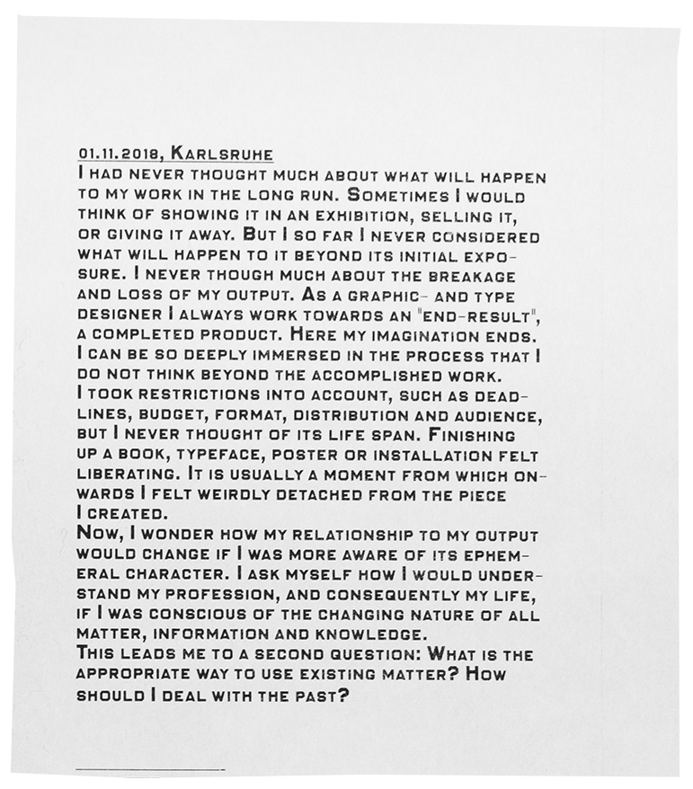
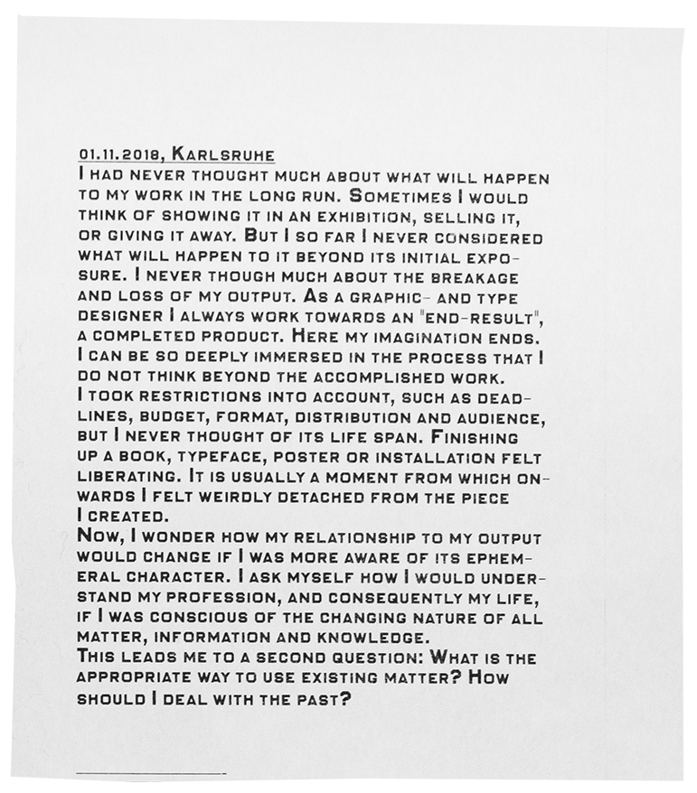


 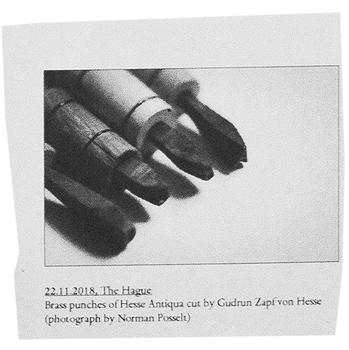
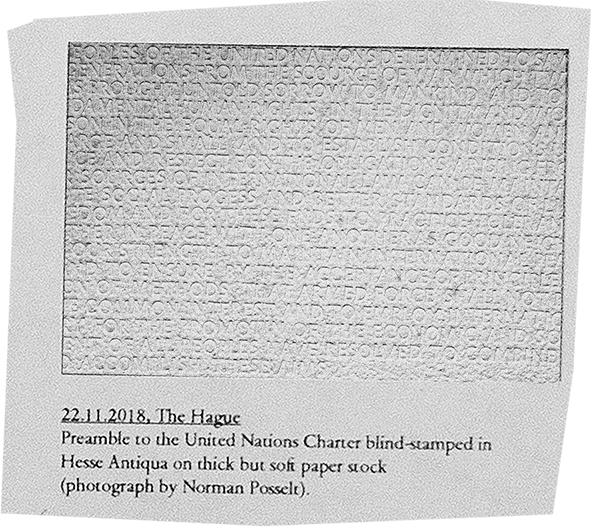
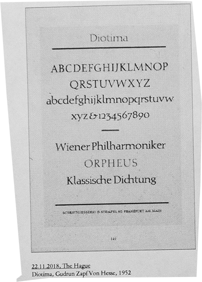
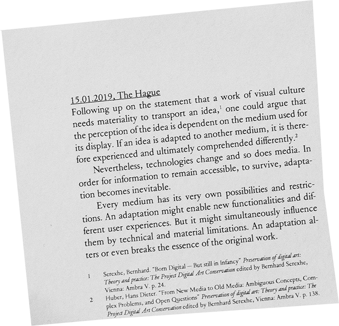
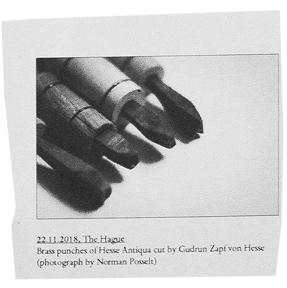
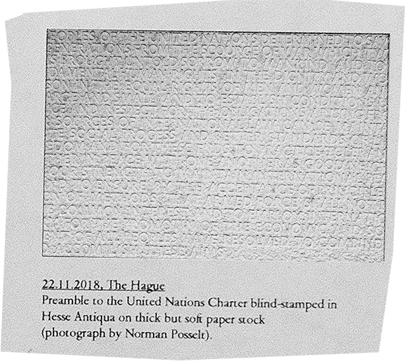
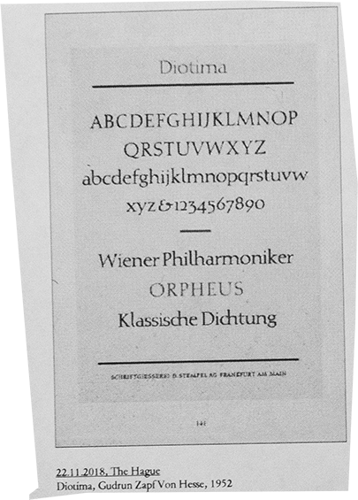
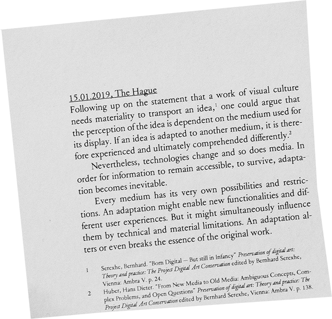
 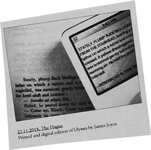
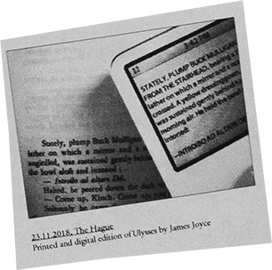
 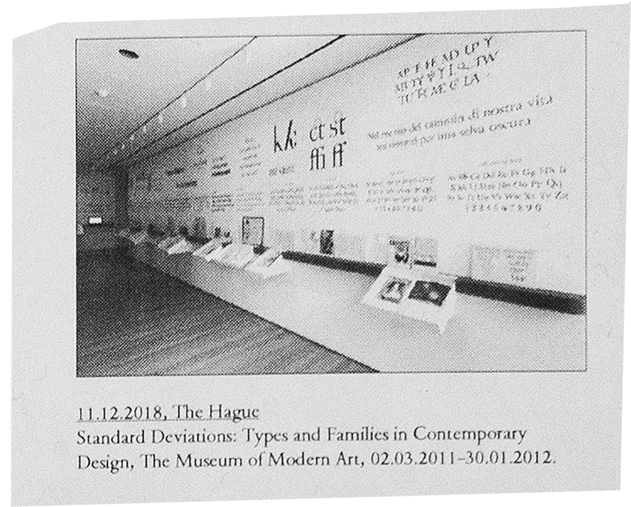
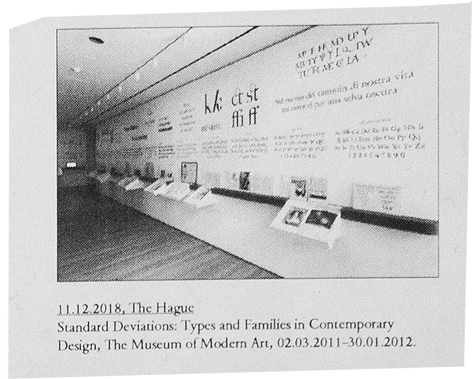

 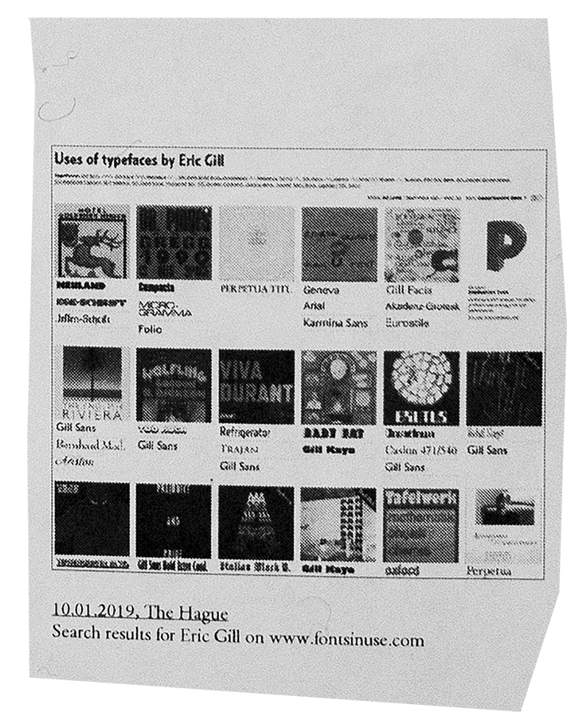
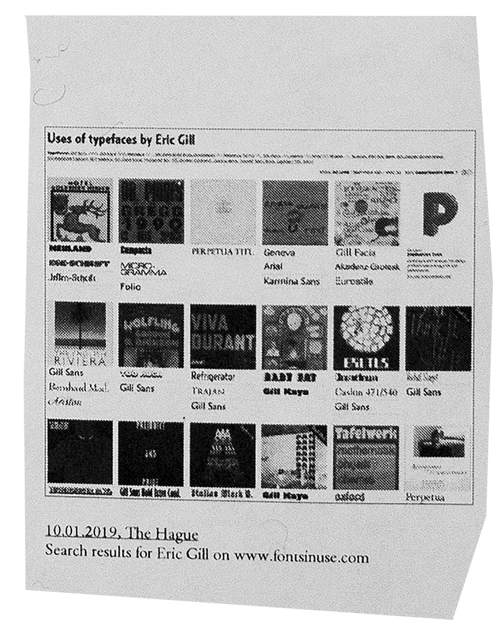